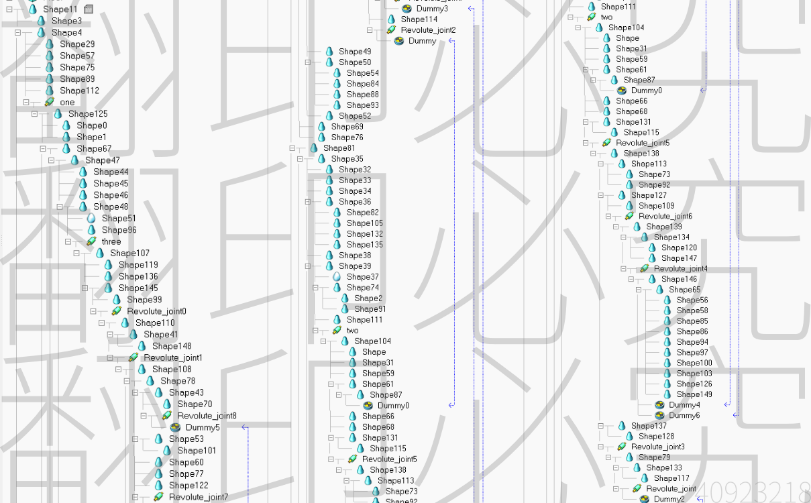

個人 <<
Previous Next >> homepage
小組
我的部分除了繪製分配的零件，手臂匯入Coppeliasim的模擬也是我製作的

上學期所學的Coppealisim，我是整組裡面學的最熟的，自然組裝模擬的部分就落到我手上了，先經由大家繪製零件後，透過21號進行組裝，我這邊則是進行匯入Coppeliasim來做整體結構的可動性，最後由11號進行模擬這樣。
在分配零件時，因為我鮮少使用NX，大多使用Inventor居多，所以分配到的零件中會出現我不知道該怎麼畫，又或著是不知道NX的功能該如何使用，還好我們這組的43號精通NX，所以有出現問題我都是直接問他。
將零件繪製完、組立完之後，Coppilasim的部分是我處理的，跟上學期一樣，在組合中，每個零件應該與哪個零件做約束，Dammy應該如何讓兩個不同分類群的零件座結合的同時不出現錯誤，組合過程中也是一直試錯，直到最後組立完後，匯入UI確定手臂運動沒問題，就會交給下一個組員進行程式匯入及模擬結果這樣
這次的meArm我總共花兩個小時完成，從一開始的分類零件、過程中的零件約束一直到最後的匯入UI模擬，做完之後真的是有個成就感。
總結，這學期的課程讓我知道，如果這些工作從頭到尾是一個人做的，大概會累死，而且每個人都有不會的地方，如果做到分工合作，每個人在自己擅長的地方做的話，可以很快就完成了，就像接力賽一樣，一棒接一棒。
個人 <<
Previous Next >> homepage